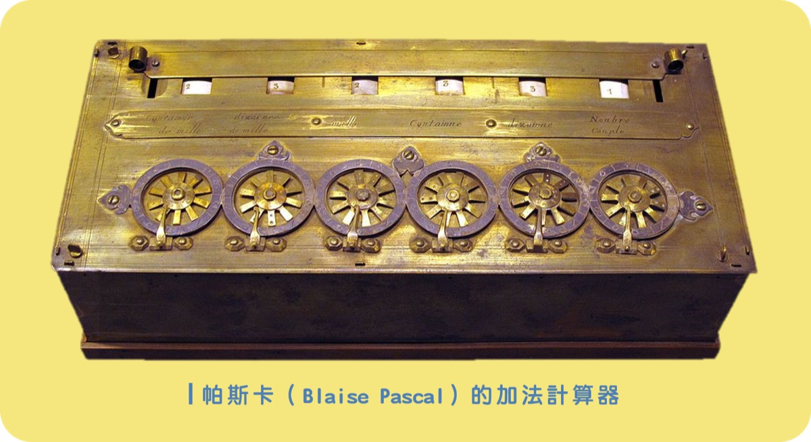
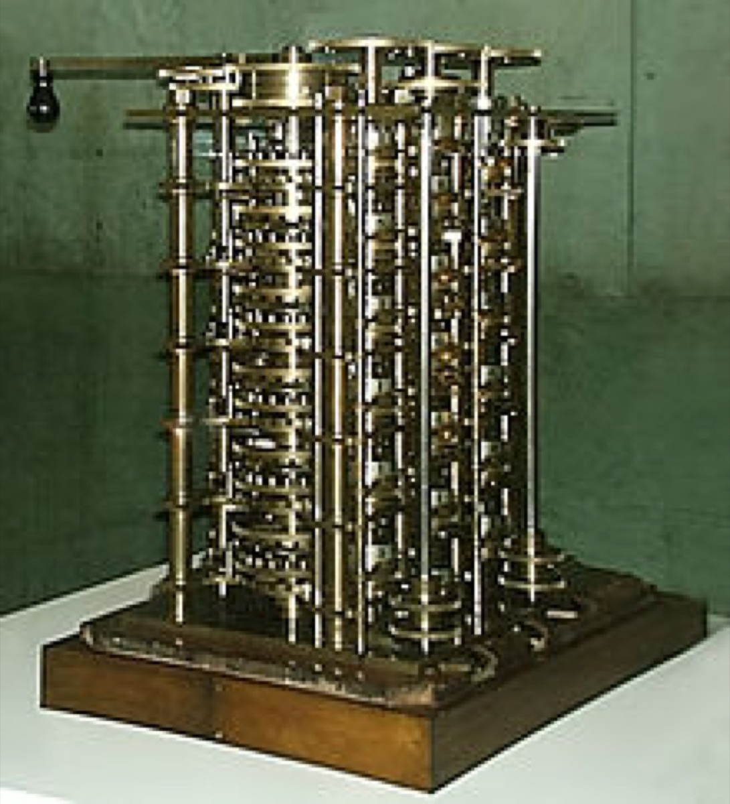
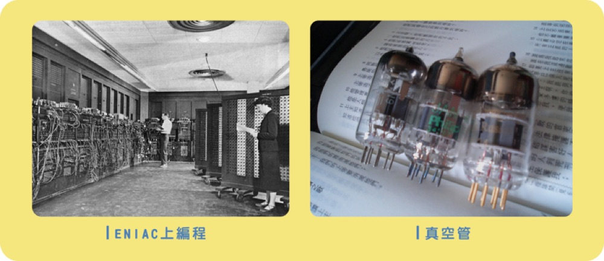
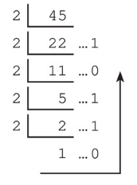
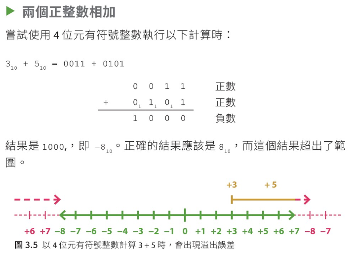
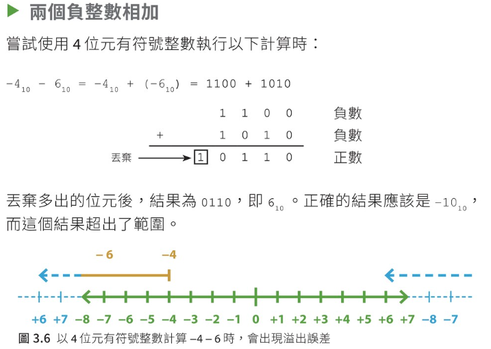
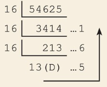

低 / 關 / 假
例如低電壓、關閉的開關，或邏輯值 False。
CORE A · A2.3
Data Representation & Number Systems
從電腦只懂「0」和「1」開始，學習位元、二進制、二補碼與十六進制，並掌握常見的數字轉換方法。
A2 / DIGITAL DATA
完成本節後，你應能解釋電腦如何以位元表示數據，並進行常見的進制及有號整數運算。
FROM SIGNALS TO DATA
電腦電路容易辨認兩種穩定狀態，因此以二進制訊號表示和處理數據。
例如低電壓、關閉的開關，或邏輯值 False。
例如高電壓、開啟的開關，或邏輯值 True。
一個二進制數位稱為一個位元（bit）。把更多位元組合起來，就可以表示數字、文字、圖像及聲音；例如變聲效果會把聲音數據數碼化，再經處理後輸出。
A SHORT HISTORY OF COMPUTING
早期的機械計算工具，逐步發展成利用電子訊號處理數據的現代電腦。



MEASURING DIGITAL DATA
儲存容量通常以位元組為基礎；網絡速度則常以每秒傳送的位元數表示。
| 單位 | 符號 | 換算 |
|---|---|---|
| 位元 | bit（b） | 數據的基本單位，只可為 0 或 1 |
| 位元組 | Byte（B） | 1 B = 8 bits |
| 千位元組 | KB | 1 KB = 1,024 B |
| 百萬位元組 | MB | 1 MB = 1,024 KB |
| 十億位元組 | GB | 1 GB = 1,024 MB |
在此課程的二進制容量換算中，KB、MB、GB 每級以 1,024 倍計算。
| 單位 | 換算 |
|---|---|
| kbps | 1 kbps = 1,000 bps |
| Mbps | 1 Mbps = 1,000 kbps |
| Gbps | 1 Gbps = 1,000 Mbps |
| Tbps | 1 Tbps = 1,000 Gbps |
bps 是 bits per second（每秒位元數）。傳輸率常用十進制前綴，每級相差 1,000 倍；注意不要與容量的 1,024 倍混淆。
NUMBER SYSTEMS
數字的右下角標示基數（base），用來說明這個數字採用哪一種進制。
| 進制 | 基數 | 可用數字符號 | 例子 | 常見用途 |
|---|---|---|---|---|
| 十進制 | 10 | 0–9 | 18110 | 日常數值 |
| 二進制 | 2 | 0、1 | 101101012 | 電腦內部表示數據 |
| 十六進制 | 16 | 0–9、A–F | B4AF16 | 簡潔表示二進制資料，例如色彩值 |
一個數字的每一位，代表該數字乘以基數的某個次方。由最右邊開始，位值依次為基數的 0 次方、1 次方、2 次方……
101101012 = 1×27 + 0×26 + 1×25 + 1×24 + 0×23 + 1×22 + 0×21 + 1×20 = 18110
BINARY CONVERSION
使用位值相加可把二進制轉為十進制；反向轉換則可連續除以 2。
把每個二進制數位乘以其對應的 2 次方，再把結果相加。
101101012
= 128 + 0 + 32 + 16 + 0 + 4 + 0 + 1
= 18110
將整數反覆除以 2，記下每次的餘數；由最後一個餘數向上讀回，即得二進制數字。
4510 = 1011012
若要用 8 位元表示，前面補零：001011012

BIT PATTERNS & INTEGER RANGES
固定的位元數只能組成有限種樣式；是否保留符號位，會改變可表示的數值範圍。
所有位元都表示數值，不能表示負數。
N 位元可表示 0 至 2N − 1
例如 3 位元共有 23 = 8 種樣式，範圍是 0002（0）至 1112（7）。
最高位元的權值為負，其餘位元的權值為正，因此可以表示正數、零和負數。
N 位元可表示 −2N−1 至 2N−1 − 1
例如 3 位元的範圍為 −4 至 3；8 位元的範圍為 −128 至 127。
SIGNED INTEGER REPRESENTATION
二補碼讓電腦能用同一套加法電路處理有號數的加法與減法。
以 8 位元表示 −45：
+45 = 00101101 → 反轉 = 11010010 → 加 1 = 11010011
因此，−45 的 8 位元二補碼是 110100112。求二補碼前，要先確認正數已補足指定位元數。
以 4 位元二補碼計算，3 = 0011、5 = 0101；相加得到 1000。這個樣式代表 −8，但正確答案 +8 超出 4 位元範圍 −8 至 +7，因此發生溢位。

−4 = 1100、−6 = 1010；保留 4 位元相加得到 0110（+6），但正確答案 −10 超出範圍。兩個負數相加後變成正數，同樣代表溢位。

HEXADECIMAL
因為 16 = 24，每一個十六進制數字剛好對應 4 個二進制位元。
十六進制使用 0–9 表示十進制的 0–9，再以 A、B、C、D、E、F 分別表示十進制的 10、11、12、13、14、15。
| 十進制 | 0 | 1 | 2 | 3 | 4 | 5 | 6 | 7 | 8 | 9 | 10 | 11 | 12 | 13 | 14 | 15 |
|---|---|---|---|---|---|---|---|---|---|---|---|---|---|---|---|---|
| 十六進制 | 0 | 1 | 2 | 3 | 4 | 5 | 6 | 7 | 8 | 9 | A | B | C | D | E | F |
轉換時由右至左，每 4 個二進制位元分成一組，再把每組換成一個十六進制數字；位元不足 4 位時，可在最左邊補 0。
每一位乘以 16 的相應次方，再把各位的值相加。
B4AF16
= 11×163 + 4×162 + 10×161 + 15×160
= 45056 + 1024 + 160 + 15
= 4625510
反覆除以 16，記下餘數，並由下至上讀出；10–15 的餘數分別改寫為 A–F。
5462510 = D56116

QUICK RECAP